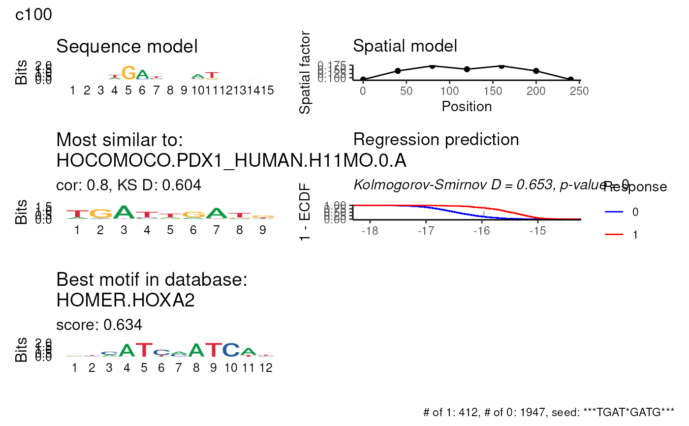

Run PWM regression on clusters
regress_pwm.clusters.RdRun PWM regression on clusters
Usage
regress_pwm.clusters(
sequences,
clusters,
use_sample = FALSE,
match_with_db = TRUE,
sample_frac = NULL,
sample_ratio = 1,
final_metric = "ks",
parallel = getOption("prego.parallel", TRUE),
...
)Arguments
- sequences
A vector of DNA sequences ('A', 'T', 'C' or 'G'. Will go through
toupper)- clusters
a vector with the cluster assignments for each sequence
- use_sample
whether to use sampled optimization or not (default: FALSE).
- match_with_db
match the resulting PWMs with motif databases using
pssm_match. This would add a column named 'db_match' to the stats data frame, together with 'pred_mat_db' with the database motif predictions, and and 'db_dataset' which is similiar to 'motif_dataset' for the database motifs. Note that the closest match is returned, even if it is not similar enough in absolute terms. Also, the match is done between the rsulting regression pssm and the pssms in the databse - in order to find the best motif in the database which explain the clusters, usescreen_pwm.clusters.- sample_frac
a vector of two numbers, specifying the fraction of sequences to use in when sampling for the sequences which are not in the cluster (first number) and in the cluster (second number). If NULL -
- sample_ratio
When
sample_fracis NULL, the number of sequences not in the cluster would be equal tosample_ratiotimes the number of sequences in the cluster.- final_metric
metric to use in order to choose the best motif. One of 'ks' or 'r2'. Note that unlike
score_metricwhich is used in the regression itself, this metric is used only for choosing the best motif out of all the runs on the sampled dataset.- parallel
whether to run optimization in parallel. use
set_parallelto set the number of cores to use.- ...
Arguments passed on to
regress_pwm,regress_pwm.sampleresponseA matrix of response variables - number of rows should equal the number of sequences
motifInitial motif to start the regression from. Can be either a string with a kmer where the character "*" indicates a wildcard or a data frame with a pre-computed PSSM (see thre slot
pssmin the return value of this function). If NULL - a K-mer screen would be performed in order to find the best kmer for initialization.motif_lengthLength of the seed motif. If the motif is shorter than this, it will be extended by wildcards (stars). Note that If the motif is longer than this, it will not be truncated.
score_metricmetric to use for optimizing the PWM. One of "r2" or "ks". When using "ks" the response variable should be a single vector of 0 and 1.
bidirectis the motif bi-directional. If TRUE, the reverse-complement of the motif will be used as well.
spat_minstart of the spatial model from the beginning of the sequence (in bp)
spat_maxend of the spatial model from the beginning of the sequence (in bp). If NULL - the spatial model would end at the end of the sequence.
spat_binsize of the spatial bin (in bp).
spat_modela previously computed spatial model (see
spat) in the return value of this function. This can only be used whenmotifis a previously computed PSSM.improve_epsilonminimum improve in the objective function to continue the optimization
min_nuc_probminimum nucleotide probability in every iteration
unif_prioruniform prior for nucleotide probabilities
include_responseinclude the response in the resulting list (default: TRUE)
verboseshow verbose messages.
seedrandom seed
consensus_single_thresh,consensus_double_threshthresholds for the consensus sequence calculation (single and double nucleotides)
motif_dataseta data frame with PSSMs ('A', 'C', 'G' and 'T' columns), with an additional column 'motif' containing the motif name, for example
HOMER_motifs,JASPAR_motifsor all_motif_datasets(). By default all_motif_datasets() would be used.multi_kmersif TRUE, different candidates of kmers would be regressed in order to find the best seed according to
final_metric.kmer_lengtha vector of kmer lengths to screen in order to find the best seed motif.
max_candsmaximum number of kmer candidates to try.
motif_numNumber of motifs to infer. When
motif_num> 1, the function would runmotif_numtimes, each time on the residuals of a linear model of all the previous runs (seesmooth_kparameter). The best motif is then returned, while all the others are stored at 'models' in the return value.smooth_kk for smoothing the predictions of each model in order to compute the resiuals when
motif_num> 1. The residulas are computed asresponse- running mean of size 'k' of the current model.is_traina boolean vector that determine which subset of sequences to use when screening
min_gap,max_gapthe length of a gap to be considered in the pattern. Only one gap, of length min_gap:max_gap, is being used, and is located anywhere in the motif. Note that this greatly expand the search space (and increase multiple tesing severly).
sample_idxsindices of the sequences to use. If NULL, the indices would be sampled using
sample_frac.
Value
a list with the following elements:
models: a list with the models for each cluster
cluster_mat: an indicator matrix with the cluster assignments
pred_mat: a matrix with the predicted pwm for each sequence (rows) and cluster (columns)
motif_dataset: a data frame with the PSSMs for each cluster
spat_dataset: a data frame with the spatial model for each cluster
stats: a data frame with statistics for each cluster
Examples
res <- regress_pwm.clusters(cluster_sequences_example, clusters_example)
#> ℹ Running regression for 5 clusters
#> ℹ Matching with motif databases
head(res$pred_mat)
#> c100 c111 c29 c5 c6
#> chr1_5108540_5108840 -17.28819 -15.88604 -16.43380 -16.61165 -16.84203
#> chr1_7313460_7313760 -14.69661 -17.02461 -16.51139 -16.67072 -17.51148
#> chr1_7778180_7778480 -15.75232 -15.11354 -16.80705 -16.65310 -16.69591
#> chr1_9381040_9381340 -16.03874 -15.04809 -15.20886 -16.47437 -16.01101
#> chr1_9921360_9921660 -14.85159 -17.90363 -15.35405 -16.13744 -16.07321
#> chr1_9931940_9932240 -16.32993 -17.16320 -14.44998 -16.72751 -16.53625
res$stats
#> # A tibble: 5 x 7
#> cluster consensus ks_D r2 seed_motif db_match
#> 1 c100 AT***TC 0.7024075 0.3852463 ***ATCCATCA**** JASPAR.MEIS1.MA1639.1
#> 2 c111 Y*RTAAA 0.8479663 0.4978355 ***CAATTAAC**** JOLMA.CDX1_mono_DBD
#> 3 c29 T*A***W*T 0.8507039 0.5581745 ***TAATCATT**** HOMER.Hnf1
#> 4 c5 GATA 0.5887910 0.2227806 ***CTGATAAG**** JASPAR.GATA1/2/3
#> 5 c6 TATC 0.6160721 0.2783910 ***TCTTATCT**** JASPAR.GATAd
#> db_match_dist
#> 1 0.244724
#> 2 0.152716
#> 3 0.340463
#> 4 0.198050
#> 5 0.219126
plot_regression_qc(res$models[[1]], title = names(res$models)[1])
#> Warning: `guides(<scale> = FALSE)` is deprecated. Please use `guides(<scale> = "none")` instead.
#> Warning: `guides(<scale> = FALSE)` is deprecated. Please use `guides(<scale> = "none")` instead.

# multiple motifs per cluster
res_multi <- regress_pwm.clusters(cluster_sequences_example, clusters_example, motif_num = 3)
#> ℹ Running regression for 5 clusters
#> Error in do.ply(i): task 1 failed - "Multiple motifs are not supported yet"
res_multi$multi_stats
#> Error in eval(expr, envir, enclos): object 'res_multi' not found
plot_regression_qc_multi(res$models[[1]], title = names(res$models)[1])
#> Error in plot_regression_qc_multi(res$models[[1]], title = names(res$models)[1]): could not find function "plot_regression_qc_multi"